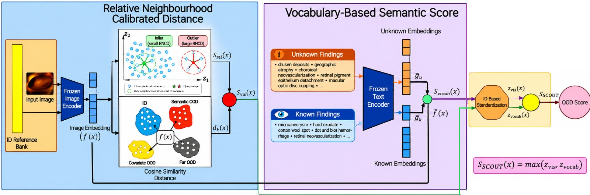
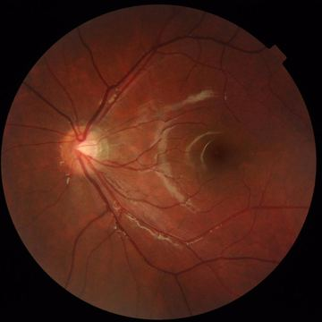
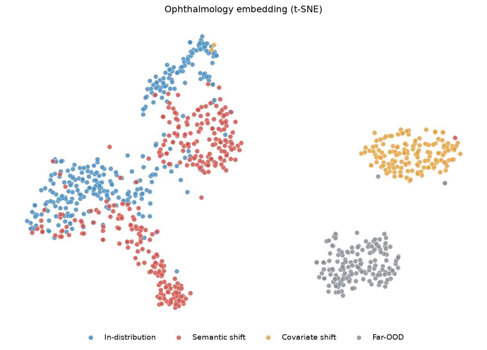

ISBI submission companion · out-of-distribution detection
SCOUT
Scoring with Clinical Vocabulary and Neighbor Distance: a training-free OOD detector for medical vision-language models.

max(·,·).1Problem
A medical VLM can assign a known class with high confidence to an image it has no business recognizing — an unseen disease, a different camera, or something that isn't medical at all. Each failure needs different evidence to catch.
Every benchmark here is split into four groups: in-distribution (ID), semantic shift, covariate shift, and far-OOD.
| Benchmark | ID | Semantic shift | Covariate shift | Far-OOD |
|---|---|---|---|---|
| Ophthalmology | FIVES normal + DR (n=300) | FIVES AMD + glaucoma (n=300) | DeepDRiD ultra-widefield (n=150) | ImageNet-1k val (n=150) |
| Dermatology | ISIC 2019 melanocytic nevi (n=300) | ISIC 2019 melanoma (n=300) | PAD-UFES-20 (n=300) | ImageNet-1k val (n=300) |
Backbones
2Why existing scores fail
Distance-based scores ignore local density and can miss diseases that resemble known ones in embedding space. Prompt-based scores cannot express findings the model's trained prompts never named. SCOUT treats these as complementary.
Density-blind kNN
A query in a sparse-but-familiar ID region looks just as "far" as a query that is genuinely novel — plain kNN distance cannot tell the two apart without knowing local density.
Vocabulary-blind prompting
A model's own class-level training prompts only ever named a small set of diseases — it has no way to express "this looks like a finding I was never given a word for."
A worked example
Real evaluation image · ophthalmology, seed 42A semantic-shift image (AMD/glaucoma) where the two branches disagree, and vocabulary is what ends up catching it:
3Method
SCOUT reads a frozen VLM twice: once by distance in the image embedding space (RNCD), once by alignment with clinical language the model was never trained to match to any image. Both are z-scored on ID-dev data only and combined by max(·,·) — no training, no OOD examples, no fine-tuning.
Relative Neighborhood–Calibrated Distance
Absolute k-NN distance to the 20 nearest ID-dev embeddings, corrected by an LOF-inspired relative term comparing the query's distance to its own neighbors' distances.
Clinical finding-vocabulary score
Two fixed term sets — $T_{known}$ for ID classes, $T_{unknown}$ for semantic-shift classes — chosen from clinical knowledge, not the model's trained prompts.
Core equations
4Try it
Five hand-picked examples across both benchmarks, or press play to draw a real row from the evaluation set (seed 42) at random.

Tick mark ≈ typical ID-dev 95th-percentile threshold on each branch.
SSCOUT = max(zvis, zvocab)
5Results
| Semantic | Covariate | Far-OOD | ||||||||
|---|---|---|---|---|---|---|---|---|---|---|
| Benchmark | Method | AUROC | AUPR | FPR95 | AUROC | AUPR | FPR95 | AUROC | AUPR | FPR95 |
Table 2 — comparison with existing methods
Mean AUROC across all three shifts
On dermatology semantic shift, TANL (81.71%) and ANTS (77.77%) both exceed SCOUT (75.14%). On ophthalmology semantic shift, PROTON's FPR95 (38.48%) is marginally below SCOUT's (39.05%), though SCOUT leads PROTON on AUROC and AUPR there. On dermatology covariate shift, SCOUT (96.83%) scores below plain kNN (97.26%).
6Embeddings
A 2-D projection of each benchmark's frozen image embeddings shows exactly what Table 3's ablation implies: ophthalmology's four groups separate cleanly, while dermatology's ID (nevus) and semantic-shift (melanoma) points overlap heavily — embeddings here track imaging style more than lesion type.

Per-image diagnostics
Real per-image score exports (seed 42), dermatology on the melanoma split reported in Tables 1–3.

7Ablation
Component ladder — semantic-shift AUROC, 5-seed mean
MeasuredOn ophthalmology, both branches help (RNCD +8.06pp, vocabulary +3.58pp further). On dermatology, RNCD costs −1.37pp but the vocabulary contributes +15.09pp — the gain comes almost entirely from language, not geometry.
8FAQ
9Limits & hypotheses
On dermatology semantic shift, SCOUT ranks third behind TANL and ANTS. Its advantage is covariate and far-OOD shift, where it leads every baseline.
| Method | Semantic AUROC | Semantic AUPR | Semantic FPR95 |
|---|---|---|---|
| TANL | 81.71±0.77 | 79.57±0.92 | 64.38±2.86 |
| ANTS | 77.77±1.05 | 73.51±1.58 | 70.00±3.38 |
| SCOUT | 75.14±2.33 | 72.17±3.32 | 74.48±3.08 |
RNCD alone (visual-neighborhood score) is 60.05% on dermatology semantic shift — below plain kNN (61.42%), a −1.37pp change. The clinical vocabulary adds +15.09pp over RNCD to reach SCOUT's 75.14%. On dermatology covariate shift, SCOUT (96.83%) is marginally below kNN alone (97.26%).
The paper's own explanation, stated as a hypothesis rather than a settled finding:
- Claim
- Under dermatology semantic shift, melanoma images may overlap with the nevus embedding space because embeddings capture imaging style more than lesion type. This limits kNN and RNCD detection, while the small vocabulary retains much of the signal.
- Supporting evidence
- The embedding projection in §6 shows exactly this overlap for dermatology but not ophthalmology; Table 3's ablation shows RNCD contributing negatively on dermatology (−1.37pp) but positively on ophthalmology (+8.06pp).
- Secondary claim
- The max rule may further dilute the vocabulary's signal due to the visual score's heavier ID tail, explaining SCOUT's lower covariate AUROC than kNN alone (96.83% vs. 97.26%).